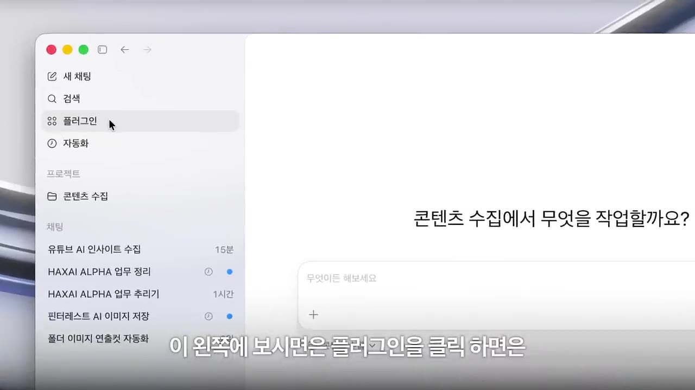
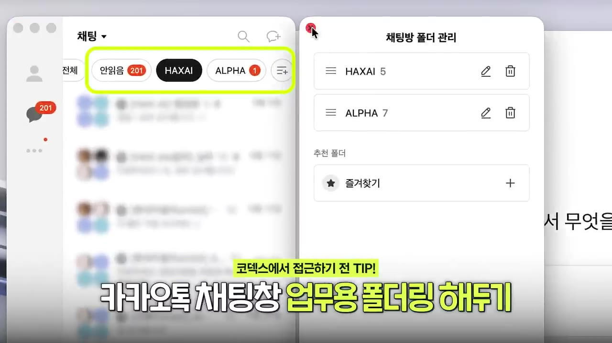
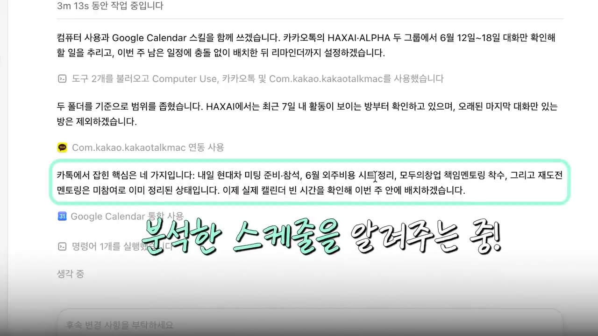
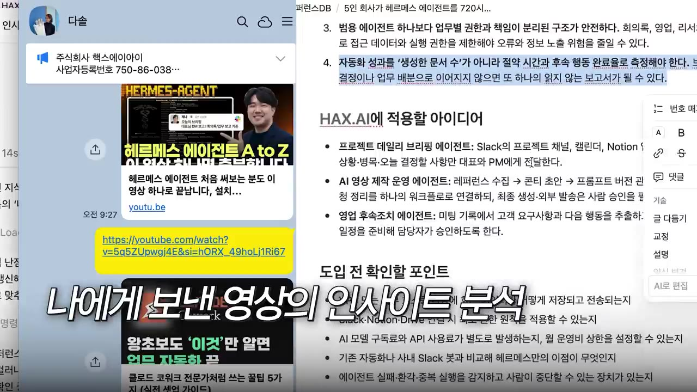
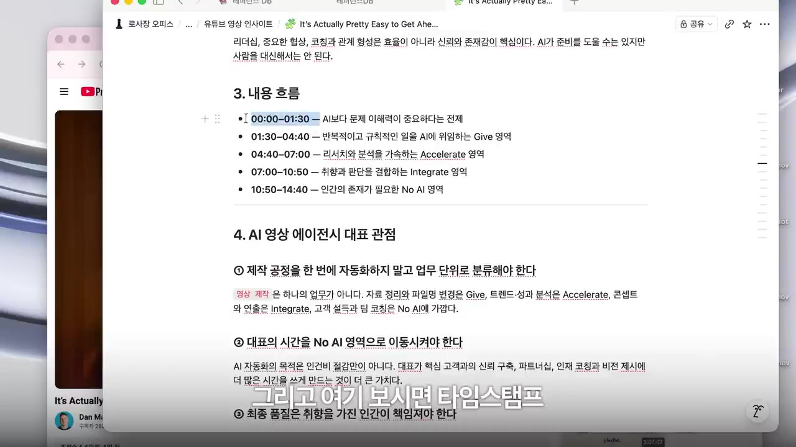
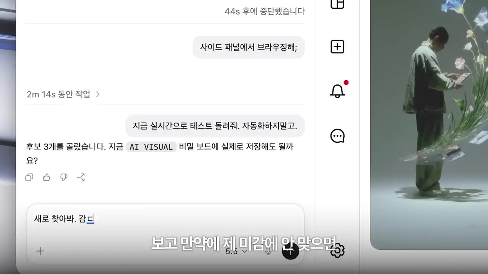
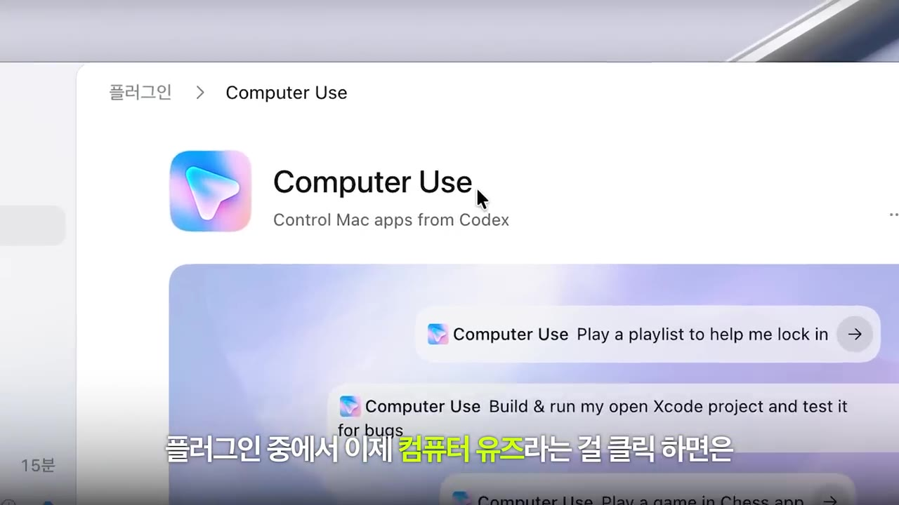

와..코덱스 이제는 무조건 쓰셔야합니다 | AI 회사 대표의 코덱스 기초 가이드 전부 공개
▶ 원본 영상 보기한눈에 보기
- 코덱스(Codex)는 ChatGPT에서 쓰는 자동화·코딩 에이전트입니다. 클로드의 'Claude Code'와 같은 자리에 있고, ChatGPT 유료 구독자라면 쓸 수 있습니다.
- 데스크톱 앱을 설치한 뒤 '플러그인'(MCP, 외부 프로그램 연결)으로 슬랙·노션·구글 캘린더 같은 앱을 붙여 일을 시킵니다.
- 맥에서는 Computer Use 플러그인으로 공식 연동이 없는 카카오톡까지 코덱스가 직접 마우스를 움직여 읽습니다. 업무방 대화를 분석해 구글 캘린더 빈 시간에 할 일을 넣어 줍니다.
- 카톡 '나에게 보내기' 링크, 구독 채널의 새 유튜브 영상, 핀터레스트 이미지를 매일 정해진 시각에 모아 노션·슬랙·무드보드에 쌓게 할 수 있습니다.
- PC가 켜져 있어야 돌아갑니다. ChatGPT 휴대폰 앱에 여러 PC를 연결해 두면 밖에서도 진행 상황을 보고 명령할 수 있습니다.
이런 분께 도움이 됩니다
- 카톡·유튜브 '나중에 보기'에 쌓인 정보를 놓치는 직장인·대표
- 코딩 없이 메신저·캘린더·노션을 잇는 업무 자동화를 해 보고 싶은 ChatGPT 유료 구독자
핵심 내용
코덱스는 무엇인가
- 코덱스는 ChatGPT 쪽에서 자동화·코딩·에이전트 만들기를 맡는 도구입니다. 클로드에서 같은 일을 하는 것이 Claude Code입니다. (0:22)
- 어려운 코딩이나 앱 개발이 없어도 간단한 업무 자동화나 레퍼런스·인사이트 수집에 바로 쓸 수 있다고 말합니다. (12:45)
- ChatGPT를 유료로 구독하면 코덱스도 쓸 수 있습니다. (13:32)
💡 코덱스는 "개발자 도구"보다 "내 업무를 대신 돌려 주는 비서"에 가깝다는 것이 영상의 핵심 주장입니다.
기본 화면과 플러그인(MCP)
- 채팅창에 하고 싶은 일을 프롬프트로 입력합니다. 채팅창 아래에 슬랙·이메일·파일 같은 연결 항목이 보입니다. 다른 프로그램을 이렇게 연결하는 방식을 MCP라고 부릅니다. (2:17)
- 왼쪽의 플러그인을 누르면 연결할 수 있는 앱 목록이 나옵니다. 슬랙·노션은 물론 구글 캘린더도 연결됩니다. (2:40)
- 한 번 연결해 둔 플러그인은 이후 요청에서 자동으로 쓰입니다. 그래서 따로 부르지 않아도 됩니다.

활용 ① 업무 카톡 → 할 일 정리·캘린더 등록
- 카카오톡은 공식 플러그인이 없습니다. 대신 플러그인 중 Computer Use(자막상 '컴퓨터 유지')를 쓰면 코덱스가 맥에 있는 앱에 직접 접근합니다. 이 기능은 맥 전용입니다(설명 문구는 'Control Mac apps from Codex'로 들림, 자막상 불분명). (2:54)
- 사생활이 섞인 대화가 읽히지 않도록, 카톡에서 업무 단톡방만 모은 폴더를 먼저 만들고 그 폴더만 보라고 범위를 좁힙니다. (3:26)

- 요청하자 코덱스가 구글 캘린더 스킬을 함께 써서 '최근 7일 안에 대화가 있었던 방부터' 확인했습니다. 화면에는 사용자 커서와 코덱스 커서가 따로 움직였습니다. (4:13)
- 결과 예시:
- "내일 현대차 미팅 준비 참석", "6월 외주 비용 시트 정리"를 할 일로 뽑았습니다.
- '모두의 창업 재도전 멘토링'은 대화에서 이미 불참으로 정리된 일이라 일정에 넣지 않았습니다.
- 위클리 미팅과 현대차 미팅이 겹치는 것을 찾아 "위클리 미팅 조정 여부 확인" 블록을 따로 넣었습니다.
- 구글 캘린더의 빈 시간에 "핵스 AI 소개 및 포트폴리오 정리" 같은 준비 작업을 자동으로 넣었습니다.
💡 카톡을 일일이 다시 읽고 캘린더에 옮겨 적던 일을 한 번의 요청으로 끝냈습니다.

활용 ② 카톡 '나에게 보내기' → 노션 레퍼런스 DB
- '나에게 보내기'로 모아 둔 링크·콘텐츠를 정리해 노션 레퍼런스 DB에 쌓아 달라고 요청합니다. 노션 플러그인이 연결돼 있어 Computer Use를 따로 부를 필요가 없었습니다. (5:47)
- 코덱스는 검색창에서 '나와의 채팅'을 찾다가 실패하자 스스로 프로필을 더블클릭해 들어갔습니다. 화면에서 날짜와 URL까지 읽었습니다.
- 보안을 위해 API 키·비밀번호·초대 토큰 같은 문자는 노션으로 옮기지 않는 필터를 스스로 걸었습니다.
- 자동화가 매일 오후 10시 30분으로 만들어졌습니다. 테스트로 만든 노션 페이지에는 주요 인사이트와 '우리 회사·나에게 적용할 아이디어'가 정리됐습니다. (7:09)

- 마지막으로 "10시 반 자동화를 돌린 뒤 이 노션 링크를 카톡 나에게 보내기로 보내 줘"를 더해 자동화 루프를 완성했습니다.
활용 ③ 즐겨 보는 유튜브 채널 → 인사이트 노션 + 슬랙
- 지정한 채널을 매일 확인해 새 영상이 올라오면 트랜스크립트(자막 원문)를 뽑아 요약하게 합니다. 이때 "AI 영상 에이전시 대표로서 참고할 인사이트"처럼 내 입장을 정해 주는 것이 중요하다고 강조합니다. (8:05)
- 노션 '유튜브 영상 인사이트 DB'에는 업로드일, 링크, 한 줄 결론이 들어갑니다. 상세 페이지는 마크다운으로 정리됐습니다.
- 표(예: AI 업무 분류 매트릭스), 구간별 타임스탬프, '대표 관점에서 참고할 점', 바로 실행할 체크리스트, 콘텐츠로 만든다면 쓸 소재가 들어갔습니다.

- 이 작업을 매일 오전 11시에 돌리고 정리본을 슬랙 DM으로 받도록 했습니다. 업무 내용이라 일부러 슬랙을 골랐습니다. 슬랙 메시지의 '노션에서 보기'를 누르면 해당 페이지로 바로 이동합니다. (9:15)
활용 ④ 핀터레스트 이미지 레퍼런스 매일 수집
- 왼쪽 '자동화'(자막상 '잔화', 불분명) 메뉴의 'AI 비주얼 데일리 큐레이션' 작업은 이렇게 설정돼 있습니다. 핀터레스트에 로그인된 브라우저로 무드보드 폴더에 AI 비주얼 이미지를 매일 5개씩 추가합니다. (10:21)
- 크롬을 따로 켜지 않고 코덱스 안의 브라우저(자막상 '이넷 브라우저', 불분명)로 검색하게 했습니다. 사이드 패널에서 실시간으로 지켜볼 수 있습니다. 코덱스는 "AI art direction", "surreal editorial" 같은 검색어로 찾았습니다. (11:11)
- 코덱스가 후보 3개를 고른 뒤 저장해도 될지 먼저 물었습니다. 취향에 안 맞으면 다시 찾게 하고, 마음에 드는 것을 체크해 "이런 톤으로 무드보드에 추가해"라고 하면 보드를 골라 저장까지 합니다.

- 매일 저장한 링크를 슬랙으로 받습니다. 팀과 나눌 내용이면 회사 슬랙의 'AI 에이전트 공유방'으로 보내 전사에 공유합니다.
사용량 한도와 휴대폰 연동
따라 해보기
준비물
- ChatGPT 유료 구독 계정
- 코덱스 데스크톱 앱(맥OS·윈도우)
- 연결할 서비스 계정: 구글 캘린더·노션·슬랙·핀터레스트 중 필요한 것
- 카톡 자동화를 하려면 맥 + 카카오톡 PC앱(Computer Use가 맥 전용)
- 자동화가 도는 시각에 켜져 있는 PC
단계별 방법
- 코덱스 검색
- 앱 다운로드
- 로그인·실행
- 플러그인 연결
- Computer Use 켜기
- 카톡 업무 폴더
- 요청 입력
- 테스트 실행
- 매일 반복 등록
- 1코덱스 검색
검색창에 "코덱스"를 입력해 'ChatGPT의 코덱스' 페이지로 들어갑니다. 데스크톱 앱으로 받아야 합니다. (1:32)
- 2앱 다운로드
내 OS에 맞는 다운로드 버튼을 누릅니다. 윈도우 버튼이 안 보이면 오른쪽 메뉴 펼치기 → '코덱스 다운로드'에서 macOS/Windows를 고릅니다. (1:55)
- 3로그인·실행
앱을 실행해 채팅창이 뜨는지 확인합니다. 로그인 과정은 영상에서 생략됐습니다(ChatGPT 계정으로 로그인, 보충).
- 4플러그인 연결
왼쪽 '플러그인'에서 노션·슬랙·구글 캘린더 등을 연결합니다. 권한 요청이 뜨면 허용합니다. (2:40)
- 5Computer Use 켜기
(맥, 카톡용) 플러그인 목록에서 Computer Use → '채팅에서 사용해 보기'를 누릅니다.

플러그인 > Computer Use 'Control Mac apps from Codex' 화면 · ▶ 2:56 - 6카톡 업무 폴더
카카오톡에서 업무 단톡방만 모은 폴더를 만듭니다. 사생활 대화가 읽히지 않게 범위를 좁히는 단계입니다.
- 7요청 입력
아래 예시 프롬프트를 입력합니다. 구글 캘린더 권한 요청이 뜨면 허용합니다.
- 8테스트 실행
"테스트로 한번 돌려 보자"라고 해서 결과물(캘린더·노션 페이지)을 확인합니다.
- 9매일 반복 등록
"매일 오후 10시 30분에…"처럼 시각을 정해 자동화로 만들고, 결과 링크를 받을 곳(카톡 나에게·슬랙 DM)도 지정합니다.
7단계에 입력할 내용 (영상 속 요청을 옮긴 것)
내 카카오톡에서 [업무 폴더 이름] 그룹에만 있는 최근 일주일치 카톡 내용을 분석하고 스케줄링 해주고 리마인드 해 줘.
나와의 대화에서 내가 보낸 자료 링크들이나 주요한 콘텐츠들을 인사이트 내용들로 정리해서 노션 레퍼런스 DB에다가 쌓고 싶어.
10시 반에 자동화를 돌린 후에 이 노션 링크를 카카오톡 나에게 보내기로 보내줘.
핀터레스트에서 매일 AI, 비주얼 감도 높은 이미지들을 검색해서 내 무드보드에 저장해 줘.
- 유튜브 자동화는 영상에서 요청 내용을 풀어서 설명했습니다(원문 프롬프트는 나오지 않음). 담을 내용은 '지정 채널 매일 확인 → 새 영상의 트랜스크립트 추출 → 요약 → ○○ 입장에서 참고할 인사이트 도출 → 노션 DB에 마크다운으로 저장 → 매일 오전 11시 → 슬랙 DM으로 전송'입니다.
따라 할 수 있는지 점검
- ✅ 바로 따라 할 수 있음: 앱 다운로드, 플러그인 메뉴 위치, 카톡 폴더로 범위 좁히기, 위 예시 프롬프트들
- ⚠️ 3단계 「로그인·실행」: 로그인과 첫 설정(작업 폴더 지정 등)이 영상에서 생략됐습니다 → 앱 첫 화면 안내를 따라 ChatGPT 계정으로 로그인합니다(보충).
- ⚠️ 5단계 「Computer Use 켜기」: 맥 전용이라 윈도우에서는 카톡 자동화를 이 방식으로 할 수 없습니다. 맥에서도 화면 기록·손쉬운 사용 권한을 줘야 하는 과정은 나오지 않았습니다 → 처음 실행할 때 macOS가 띄우는 권한 요청을 허용합니다(보충).
- ⚠️ 4단계 「플러그인 연결」: 노션 DB·슬랙 DM·핀터레스트 무드보드를 미리 만들어 둬야 하는지, 각 서비스에 어떻게 로그인하는지가 나오지 않았습니다 → 노션에 빈 DB를, 핀터레스트에 '무드보드' 보드를 먼저 만들어 두면 안전합니다(보충).
- ⚠️ 9단계 「매일 반복 등록」: 자동화가 채팅 요청만으로 만들어지는 모습은 나왔습니다. 하지만 '자동화' 메뉴에서 직접 고치거나 끄는 방법은 나오지 않았습니다 → 영상 10:21 화면에서 자동화 목록 위치를 확인합니다.
- ⚠️ 핀터레스트 작업: '로그인된 브라우저'를 어떻게 준비하는지가 영상에 없습니다(자막상 불분명) → 코덱스 안 브라우저에서 핀터레스트에 한 번 로그인해 두는 것으로 보입니다(보충).
- ❓ 한도 초기화 횟수를 처음에는 "1회 가능", 뒤에서는 "세 번의 기회"라고 말합니다. 촬영 당시 이벤트였을 수 있어 지금 기준은 앱에서 확인이 필요합니다.
확인 방법
- 카톡 분석: 구글 캘린더 빈 시간에 할 일·준비 블록이 새로 생겼는지 봅니다.
- 노션: 테스트 실행 뒤 '노션 페이지 열기'로 인사이트·적용 아이디어가 들어갔는지 봅니다.
- 알림: 지정한 시각 뒤에 카톡 나에게 보내기나 슬랙 DM으로 링크가 왔는지, 눌렀을 때 노션 페이지가 열리는지 봅니다.
- 핀터레스트: 무드보드 폴더에 이미지가 저장됐는지 봅니다.
막히면
- 작업이 멈추고 안 보내지면 5시간 사용 한도를 다 쓴 것일 수 있습니다. 한도 초기화 기능이 있으면 써 봅니다. (9:38)
- 자동화가 안 돌았다면 그 시각에 PC가 꺼져 있었는지 확인합니다.
- 핀터레스트처럼 결과물이 취향을 타는 작업은 코덱스가 저장 전에 컨펌을 받습니다. 마음에 안 들면 "아니야, 다시 찾아"라고 말합니다.
- 카톡에 개인 대화가 섞이지 않도록 반드시 업무 폴더로 범위를 정해 줍니다.
기억할 숫자·인용
- 카톡 분석 범위: 최근 7일
- 카톡 레퍼런스 수집: 매일 오후 10시 30분 / 유튜브 인사이트: 매일 오전 11시 → 슬랙 DM
- 핀터레스트 무드보드: 매일 5개, 저장 전 후보 3개 컨펌
- 사용 한도: 5시간 단위, 한도 초기화 기회 제공(촬영 당시 이벤트성으로 보임)
- "유튜브 영상을 보고 '우와' 하고 끝이 아니라 우리 회사, 나한테 어떻게 적용하면 좋을지까지"
생각해볼 점
- (영상 내용) 카톡 자동화의 핵심인 Computer Use는 맥 전용입니다. (내 의견) 윈도우 사용자는 카톡 부분을 그대로 따라 하기 어렵습니다. 노션·슬랙·유튜브·핀터레스트 쪽 자동화부터 해 보는 편이 현실적입니다.
- (내 의견) 업무 메신저 내용을 AI가 화면으로 읽게 하는 것은 회사 보안 규정과 부딪힐 수 있습니다. 코덱스가 비밀번호·토큰을 거르는 필터를 스스로 걸었다고 해도, 어떤 대화방을 보여 줄지는 사람이 정해야 합니다.
- (내 의견) 여러 자동화를 매일 돌리면 5시간 사용 한도에 빨리 닿을 수 있습니다. 구독 등급별 한도는 영상에 나오지 않았으므로 직접 확인이 필요합니다.
바로 해볼 일
- 코덱스 데스크톱 앱을 받고 플러그인에서 노션이나 슬랙을 하나 연결해 보기
- 카톡 '나에게 보내기'에 쌓인 링크를 노션 레퍼런스 DB로 정리해 달라고 테스트로 한 번 요청하기
- 자주 보는 유튜브 채널 하나를 골라 "내 입장(직업·역할)에서 참고할 인사이트" 요약 자동화 만들어 보기